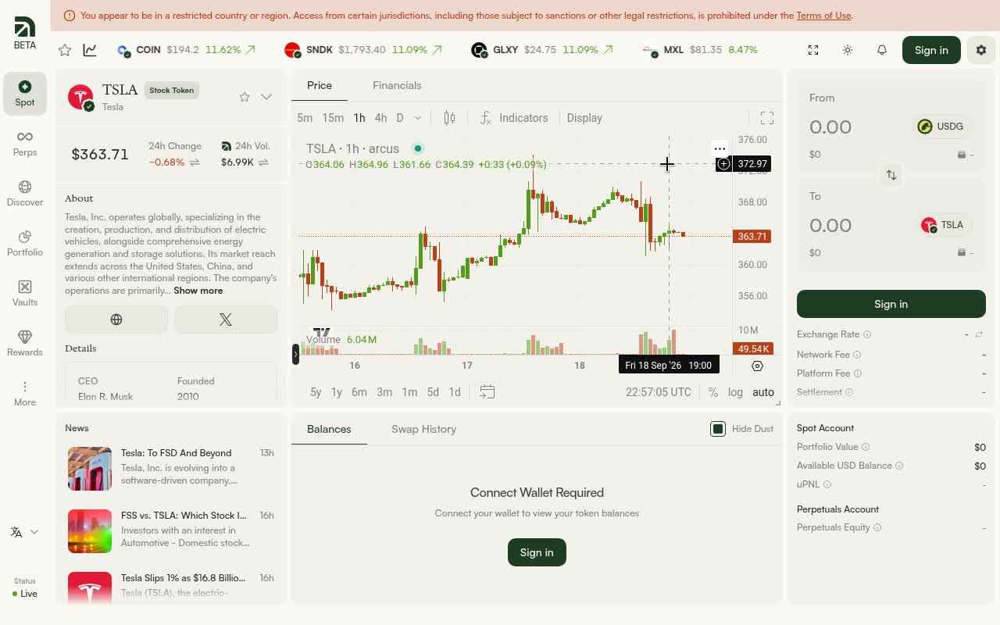
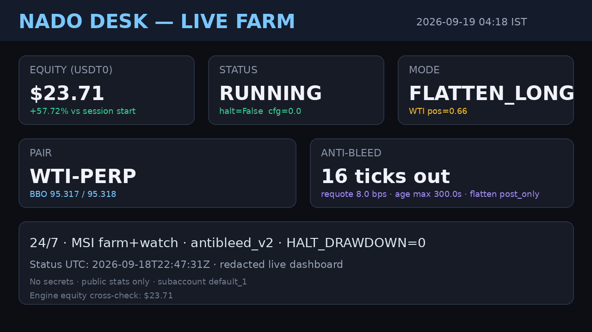
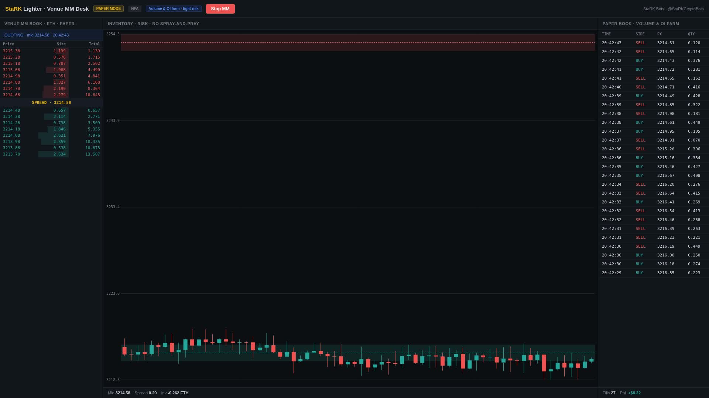

StaRK bots run ON the real venues — not a fake UI. Volume & open-interest farming without bleeding money; fee-aware per venue docs; OpenSea mint scanner 24/7. Organic activity. CA soon. $BOTS.
Bots execute against these exchanges. Open the venue to verify books / positions. StaRK public GitHub teasers are samples only — not the trading surface.
LIVE journal proof = fills from on-disk JSONL. Raw desk recording = capture of the live venue/bot UI. Public GitHub paper HTML teasers are not the product — venues above are.
| Time | Desk | Symbol | Side | Event | Size | Proof |
|---|---|---|---|---|---|---|
| Loading fills.json… | ||||||
Desk frames from raw captures + live status notes. Secrets redacted. Not fake mockups.



Unedited captures of bots on the live venues (not paper stubs). Used in the trust film. Verify live at the venue links above.
Body = REAL venue websites only (Arcus · Lighter · Nado) + OpenSea Mint Sniper. Narrative VO: volume / OI farming without bleeding money · fee-aware per perp DEX docs · organic activity · CA soon · $BOTS. No invented PnL.
Earlier journal-stats cut kept for reference: TRUST-PROOF.mp4 (not primary).
{kind=link}
{kind=link}